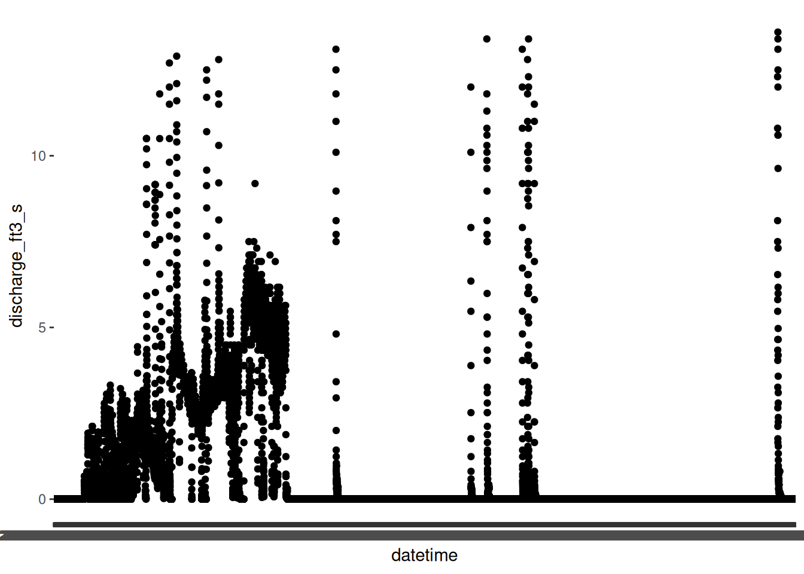
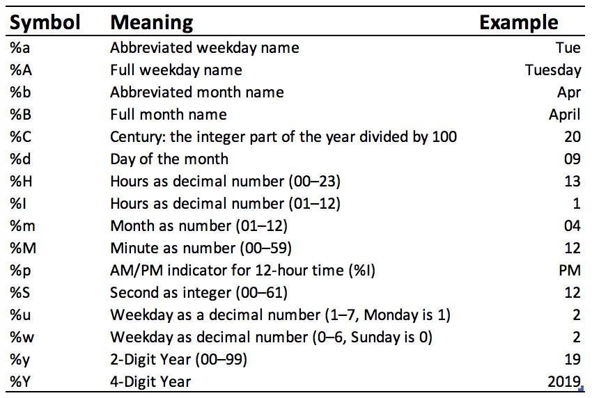
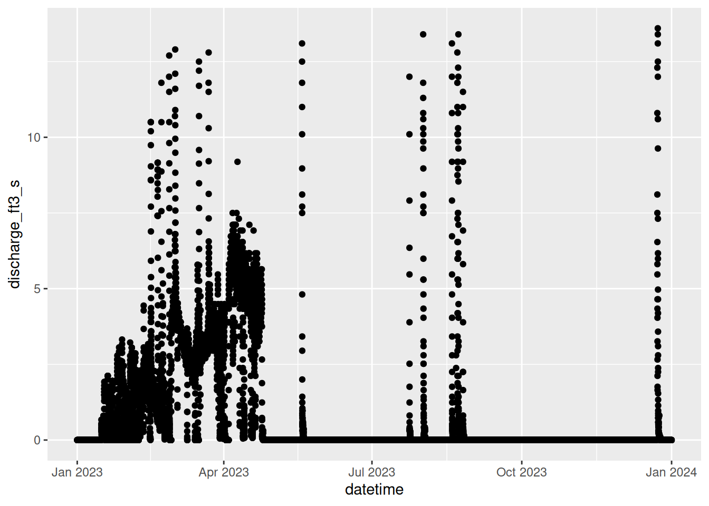

# note lubridate and stringr
library(tidyverse)Week 14: Dates and Times
Working with Dates and Times
This week, we are going to learn a bit about how to work with some of the more troublesome data types in R: dates and character strings.
I’ve divided the lessons into 2 parts this week. Today, we will work with the lubridate package to learn about working with dates and times. The first few questions in the assignment will do the same.
Set-Up
As is standard for us, let’s start by loading in the tidyverse.
We are going to use some stream data from the Santa Cruz River here in Tucson. The data are recorded every 15 minutes; these data are from 2023.
When we take a look at the data, we can see a number of rows that we need to skip when we read in the data…27 to be exact.
water <- read_tsv("data_raw/santa_cruz.txt", skip = 27, col_names = TRUE)
water# A tibble: 34,704 × 6
agency_cd site_no datetime tz_cd `307121_00060` `307121_00060_cd`
<chr> <chr> <chr> <chr> <chr> <chr>
1 5s 15s 20d 6s 14n 10s
2 USGS 09482495 2023-01-01 00:00 MST 0.00 A
3 USGS 09482495 2023-01-01 00:15 MST 0.00 A
4 USGS 09482495 2023-01-01 00:30 MST 0.00 A
5 USGS 09482495 2023-01-01 00:45 MST 0.00 A
6 USGS 09482495 2023-01-01 01:00 MST 0.00 A
7 USGS 09482495 2023-01-01 01:15 MST 0.00 A
8 USGS 09482495 2023-01-01 01:30 MST 0.00 A
9 USGS 09482495 2023-01-01 01:45 MST 0.00 A
10 USGS 09482495 2023-01-01 02:00 MST 0.00 A
# ℹ 34,694 more rowsOk, we are close but not quite there. The first row of data is metadata rather than data values.
To remove that, we are going to use a new function called slice(), from the dplyr package. It allows us to choose (or remove, in our case) rows from a dataframe based on position. We want to remove the first row.
water <- water %>%
slice(-1)
water# A tibble: 34,703 × 6
agency_cd site_no datetime tz_cd `307121_00060` `307121_00060_cd`
<chr> <chr> <chr> <chr> <chr> <chr>
1 USGS 09482495 2023-01-01 00:00 MST 0.00 A
2 USGS 09482495 2023-01-01 00:15 MST 0.00 A
3 USGS 09482495 2023-01-01 00:30 MST 0.00 A
4 USGS 09482495 2023-01-01 00:45 MST 0.00 A
5 USGS 09482495 2023-01-01 01:00 MST 0.00 A
6 USGS 09482495 2023-01-01 01:15 MST 0.00 A
7 USGS 09482495 2023-01-01 01:30 MST 0.00 A
8 USGS 09482495 2023-01-01 01:45 MST 0.00 A
9 USGS 09482495 2023-01-01 02:00 MST 0.00 A
10 USGS 09482495 2023-01-01 02:15 MST 0.00 A
# ℹ 34,693 more rowsThat’s better! Let’s also rename the last 2 columns. Those numbers are going to be pretty annoying to deal with down the road.
The stream discharge column should be numeric but got read in as character for some reason, so we need to convert it to a numeric data class.
water <- water %>%
rename(discharge_ft3_s = `307121_00060`,
qualification_code = `307121_00060_cd`) %>%
mutate(discharge_ft3_s = as.double(discharge_ft3_s))
water# A tibble: 34,703 × 6
agency_cd site_no datetime tz_cd discharge_ft3_s qualification_code
<chr> <chr> <chr> <chr> <dbl> <chr>
1 USGS 09482495 2023-01-01 00:00 MST 0 A
2 USGS 09482495 2023-01-01 00:15 MST 0 A
3 USGS 09482495 2023-01-01 00:30 MST 0 A
4 USGS 09482495 2023-01-01 00:45 MST 0 A
5 USGS 09482495 2023-01-01 01:00 MST 0 A
6 USGS 09482495 2023-01-01 01:15 MST 0 A
7 USGS 09482495 2023-01-01 01:30 MST 0 A
8 USGS 09482495 2023-01-01 01:45 MST 0 A
9 USGS 09482495 2023-01-01 02:00 MST 0 A
10 USGS 09482495 2023-01-01 02:15 MST 0 A
# ℹ 34,693 more rowsLet’s try to plot the amount of water flowing through the stream through time.
ggplot(water, aes(datetime, discharge_ft3_s)) +
geom_point()
Well, that doesn’t look great…
As it turns out, the datetime column is also currently character data. In order to use this column efficiently, we will want to convert it to a date (or datetime) data class.
Dates and Times with lubridate
Dates and times can be particularly challenging to work with, but thankfully the lubridate package makes it a bit easier.
Referencing the Current Date and Time
First, let’s start with functions that return the current date and/or time. These are helpful if you want to “stamp” with the date/time something happens (e.g., when exactly did you knit that PDF file).
# date
today()[1] "2026-04-06"# date and time
now()[1] "2026-04-06 03:21:48 UTC"Aside from these functions, we will mostly be using the lubridate functions within a mutate function to modify entire columns at once.
Let’s Practice: Complete Questions 1 and 2 in the assignment.
Making a datetime Column
The most generic function in lubridate is as_date or the variant, as_datetime. These convert non-dates into a date data class.
We need to specify the following arguments:
- the data to be converted to a datetime
- the format of the datetime data
- optionally, we can specify the time zone
The way we specify the format of the datetime is a bit unusual. We use “conversion specifications,” which are introduced by a % and are typically represented by a letter. There are lots of options, many of which are in the image below:

The characters that are used to separate the date and time data are interpreted literally. What does that mean? If the date is separated by -, the conversion specifications should be separated by -, too.
For example, if our dates were formatted as 02/29/24, the corresponding conversion format would be %m/%d/%y.
Let’s convert our datetime column to a datetime data class.
water %>%
mutate(datetime = as_datetime(datetime, format = "%Y-%m-%d %H:%M", tz = "MST"))# A tibble: 34,703 × 6
agency_cd site_no datetime tz_cd discharge_ft3_s
<chr> <chr> <dttm> <chr> <dbl>
1 USGS 09482495 2023-01-01 00:00:00 MST 0
2 USGS 09482495 2023-01-01 00:15:00 MST 0
3 USGS 09482495 2023-01-01 00:30:00 MST 0
4 USGS 09482495 2023-01-01 00:45:00 MST 0
5 USGS 09482495 2023-01-01 01:00:00 MST 0
6 USGS 09482495 2023-01-01 01:15:00 MST 0
7 USGS 09482495 2023-01-01 01:30:00 MST 0
8 USGS 09482495 2023-01-01 01:45:00 MST 0
9 USGS 09482495 2023-01-01 02:00:00 MST 0
10 USGS 09482495 2023-01-01 02:15:00 MST 0
# ℹ 34,693 more rows
# ℹ 1 more variable: qualification_code <chr>We can now see that the datetime column is something new, called POSIXct.
You don’t need to know too much about what that means beyond that this is a common way datetimes are stored in R.
Behind the scenes, the date/time is being stored as the number of seconds since Jan 1, 1970 at 00:00:00 UTC, allowing R to perform mathematical calculations with dates and times, which I’ll demonstrate later in the lesson.
If you’d like to learn a bit more about working with POSIXct (or other variants), I think this lesson from NEON does a pretty nice job.
Functions Specifying Date/Time Structure
Personally, any time I try to remember the conversion specifications, I draw a blank. Are they uppercase or lowercase? Does the letter match the first letter of the data it represents? (Spoiler alert: not always…)
lubridate provides functions with nearly every iteration and combination of year, month, day, hour, minutes, and seconds.
When we use these, we don’t need to specify the exact format or the separators, which is particularly helpful if you have dates with different separators in the same column.
As we know from the previous code, our datetime column has year, month, day, hours and minutes.
water <- water %>%
mutate(datetime = ymd_hm(datetime))
water# A tibble: 34,703 × 6
agency_cd site_no datetime tz_cd discharge_ft3_s
<chr> <chr> <dttm> <chr> <dbl>
1 USGS 09482495 2023-01-01 00:00:00 MST 0
2 USGS 09482495 2023-01-01 00:15:00 MST 0
3 USGS 09482495 2023-01-01 00:30:00 MST 0
4 USGS 09482495 2023-01-01 00:45:00 MST 0
5 USGS 09482495 2023-01-01 01:00:00 MST 0
6 USGS 09482495 2023-01-01 01:15:00 MST 0
7 USGS 09482495 2023-01-01 01:30:00 MST 0
8 USGS 09482495 2023-01-01 01:45:00 MST 0
9 USGS 09482495 2023-01-01 02:00:00 MST 0
10 USGS 09482495 2023-01-01 02:15:00 MST 0
# ℹ 34,693 more rows
# ℹ 1 more variable: qualification_code <chr>Now, when we plot the trend of water discharge through 2023, we can see that ggplot knows how to deal with the values more efficiently.
ggplot(water, aes(datetime, discharge_ft3_s)) +
geom_point()
Let’s Practice: Work on Question 4a and 4b in the assignment.
Extracting Specific Components
Sometimes, we don’t want all of the data from the datetime or we want to filter, group_by, summarize, etc. by a part of the datetime.
For example, perhaps we want to know the average water discharge per month. We would first want to create a new column with the month for each observation and then group_by and summarize.
There are numerous functions we can use to extract specific components from the datetime.
We can use the date() function to pull out the date from the datetime. As a note, it is surprisingly challenging to create a time column…
water %>%
mutate(Date = date(datetime))# A tibble: 34,703 × 7
agency_cd site_no datetime tz_cd discharge_ft3_s
<chr> <chr> <dttm> <chr> <dbl>
1 USGS 09482495 2023-01-01 00:00:00 MST 0
2 USGS 09482495 2023-01-01 00:15:00 MST 0
3 USGS 09482495 2023-01-01 00:30:00 MST 0
4 USGS 09482495 2023-01-01 00:45:00 MST 0
5 USGS 09482495 2023-01-01 01:00:00 MST 0
6 USGS 09482495 2023-01-01 01:15:00 MST 0
7 USGS 09482495 2023-01-01 01:30:00 MST 0
8 USGS 09482495 2023-01-01 01:45:00 MST 0
9 USGS 09482495 2023-01-01 02:00:00 MST 0
10 USGS 09482495 2023-01-01 02:15:00 MST 0
# ℹ 34,693 more rows
# ℹ 2 more variables: qualification_code <chr>, Date <date>Let’s create columns for each segment.
water <- water %>%
mutate(Year = year(datetime),
Month = month(datetime, label = TRUE),
Day = day(datetime),
Hour = hour(datetime),
Minutes = minute(datetime),
Seconds = second(datetime))
water# A tibble: 34,703 × 12
agency_cd site_no datetime tz_cd discharge_ft3_s
<chr> <chr> <dttm> <chr> <dbl>
1 USGS 09482495 2023-01-01 00:00:00 MST 0
2 USGS 09482495 2023-01-01 00:15:00 MST 0
3 USGS 09482495 2023-01-01 00:30:00 MST 0
4 USGS 09482495 2023-01-01 00:45:00 MST 0
5 USGS 09482495 2023-01-01 01:00:00 MST 0
6 USGS 09482495 2023-01-01 01:15:00 MST 0
7 USGS 09482495 2023-01-01 01:30:00 MST 0
8 USGS 09482495 2023-01-01 01:45:00 MST 0
9 USGS 09482495 2023-01-01 02:00:00 MST 0
10 USGS 09482495 2023-01-01 02:15:00 MST 0
# ℹ 34,693 more rows
# ℹ 7 more variables: qualification_code <chr>, Year <dbl>, Month <ord>,
# Day <int>, Hour <int>, Minutes <int>, Seconds <dbl>Now, we can calculate the average value per month.
water %>%
group_by(Month) %>%
summarise(mean = mean(discharge_ft3_s))# A tibble: 12 × 2
Month mean
<ord> <dbl>
1 Jan 0.220
2 Feb 1.46
3 Mar 3.27
4 Apr 3.40
5 May 0.0442
6 Jun 0
7 Jul 0.0222
8 Aug 0.256
9 Sep 0
10 Oct 0
11 Nov 0
12 Dec 0.0886We can also create new columns such as day of year (DOY). This is the day of year, running from 0-365. One common use for DOY is in phenology, measuring the annual timing of life history stages. The function to calculate DOY is yday().
water %>%
mutate(DOY = yday(datetime), .after = tz_cd)# A tibble: 34,703 × 13
agency_cd site_no datetime tz_cd DOY discharge_ft3_s
<chr> <chr> <dttm> <chr> <dbl> <dbl>
1 USGS 09482495 2023-01-01 00:00:00 MST 1 0
2 USGS 09482495 2023-01-01 00:15:00 MST 1 0
3 USGS 09482495 2023-01-01 00:30:00 MST 1 0
4 USGS 09482495 2023-01-01 00:45:00 MST 1 0
5 USGS 09482495 2023-01-01 01:00:00 MST 1 0
6 USGS 09482495 2023-01-01 01:15:00 MST 1 0
7 USGS 09482495 2023-01-01 01:30:00 MST 1 0
8 USGS 09482495 2023-01-01 01:45:00 MST 1 0
9 USGS 09482495 2023-01-01 02:00:00 MST 1 0
10 USGS 09482495 2023-01-01 02:15:00 MST 1 0
# ℹ 34,693 more rows
# ℹ 7 more variables: qualification_code <chr>, Year <dbl>, Month <ord>,
# Day <int>, Hour <int>, Minutes <int>, Seconds <dbl>Creating Dates from Segments
What if you are given a dataset that has separate year, month, and day columns that you need to combine? If you recall, this is how the data frame for the Portal rodents is set up.
surveys <- read_csv("data_raw/surveys.csv")Rows: 35549 Columns: 9
── Column specification ────────────────────────────────────────────────────────
Delimiter: ","
chr (2): species_id, sex
dbl (7): record_id, mo, day, yr, plot_id, hindfoot_length, weight
ℹ Use `spec()` to retrieve the full column specification for this data.
ℹ Specify the column types or set `show_col_types = FALSE` to quiet this message.surveys# A tibble: 35,549 × 9
record_id mo day yr plot_id species_id sex hindfoot_length weight
<dbl> <dbl> <dbl> <dbl> <dbl> <chr> <chr> <dbl> <dbl>
1 1 7 16 1977 2 NL M 32 NA
2 2 7 16 1977 3 NL M 33 NA
3 3 7 16 1977 2 DM F 37 NA
4 4 7 16 1977 7 DM M 36 NA
5 5 7 16 1977 3 DM M 35 NA
6 6 7 16 1977 1 PF M 14 NA
7 7 7 16 1977 2 PE F NA NA
8 8 7 16 1977 1 DM M 37 NA
9 9 7 16 1977 1 DM F 34 NA
10 10 7 16 1977 6 PF F 20 NA
# ℹ 35,539 more rowsWe can bring these columns together to form a date column using the make_date() function.
surveys <- surveys %>%
mutate(date = make_date(year = yr,
month = mo,
day = day))
surveys# A tibble: 35,549 × 10
record_id mo day yr plot_id species_id sex hindfoot_length weight
<dbl> <dbl> <dbl> <dbl> <dbl> <chr> <chr> <dbl> <dbl>
1 1 7 16 1977 2 NL M 32 NA
2 2 7 16 1977 3 NL M 33 NA
3 3 7 16 1977 2 DM F 37 NA
4 4 7 16 1977 7 DM M 36 NA
5 5 7 16 1977 3 DM M 35 NA
6 6 7 16 1977 1 PF M 14 NA
7 7 7 16 1977 2 PE F NA NA
8 8 7 16 1977 1 DM M 37 NA
9 9 7 16 1977 1 DM F 34 NA
10 10 7 16 1977 6 PF F 20 NA
# ℹ 35,539 more rows
# ℹ 1 more variable: date <date>Let’s Practice: Work on Question 4d in the assignment.
Performing Calculations
Because of the unique way that dates and datetimes are stored in R, we can also perform calculations with them.
In particular, lubridate has functions to calculate intervals between dates and datetimes.
start <- min(surveys$date, na.rm = TRUE)
end <- max(surveys$date, na.rm = TRUE)
date_interval <- interval(start, end)
date_interval[1] 1977-07-16 UTC--2002-12-31 UTCas.duration(date_interval)[1] "803433600s (~25.46 years)"This lesson has really only scraped the surface of working with dates, but it should get you started if you need to do so in the future!